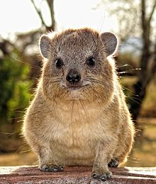

| While taxonomical grouping of sequences may be a little easier to automate (when the information about the source organism is available - see for example our Orthobalancer) then the classification into orthologous groups, you might want to divide your sequences accoding to some unique taxonomical criteria. It helps then to know where the source organism belongs on the taxonomical tree. | ||
| A standard reference place is NCBI taxonomy webpage. However, if you do not know the scientific name, you might want to start with Google or Wikipedia. NCBI's own common name resolution sometimes fails. So, for example, Wikipedia tells you that hyrax is Procavia capensis. | ||
| Now you paste this in the window in NCBI's taxonomy page and you get again the word 'Procavia capensis' back, this time hyperlinked to the page where you can read: | ||
| Lineage (full): root; cellular organisms; Eukaryota; Opisthokonta; Metazoa; Eumetazoa; Bilateria; Deuterostomia; Chordata; Craniata; Vertebrata; Gnathostomata; Teleostomi; Euteleostomi; Sarcopterygii; Tetrapoda; Amniota; Mammalia; Theria; Eutheria; Afrotheria; Hyracoidea; Procaviidae; Procavia | ||
| Typically, it is quite enough to note from this list that this is a mammal, but you can click around the taxonomical names - you'll start picking the stuff quite quickly. There are actually not that many eukaryotic species that people study. (Though we are all looking forward to the first results from the Genome 10K Project.) | ||
| The situation becomes more involved when it comes to bacteria, but the NCBI's tax webpage still works. Or if you are a bacteriologist you probably already now better. | ||
| Btw, meet hyrax. Hard to believe the thing is more closely related to elephants then to hamsters. |  | |